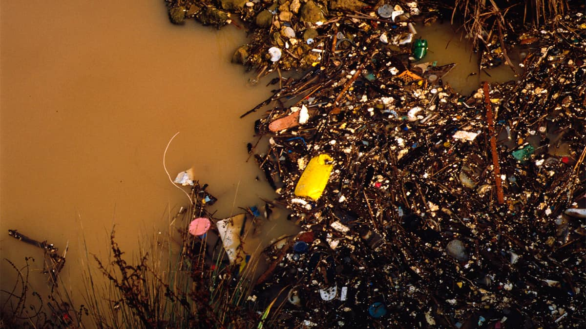

Zona 01
Fábricas
Emissão constante de gases e resíduos que se acumulam ao redor dos bairros mais próximos.
Arquivo 02
Os pontos mais críticos da cidade se repetem: setores industriais, bueiros obstruídos, rios poluídos e bairros de baixa cobertura ambiental.

Emissão constante de gases e resíduos que se acumulam ao redor dos bairros mais próximos.
Água com resíduos, esgoto e acúmulo de lixo que atravessa a encosta urbana.
Solo contaminado e áreas abandonadas que exigem recuperação e maior vigilância.
| Região | Tipo de risco | Impacto | Status |
|---|---|---|---|
| Centro | Ar pesado | Alta concentração de poeira | Crítico |
| Rio Norte | Água contaminada | Resíduos e esgoto | Alerta |
| Vale do Lixo | Solo degradado | Risco à saúde pública | Emergência |